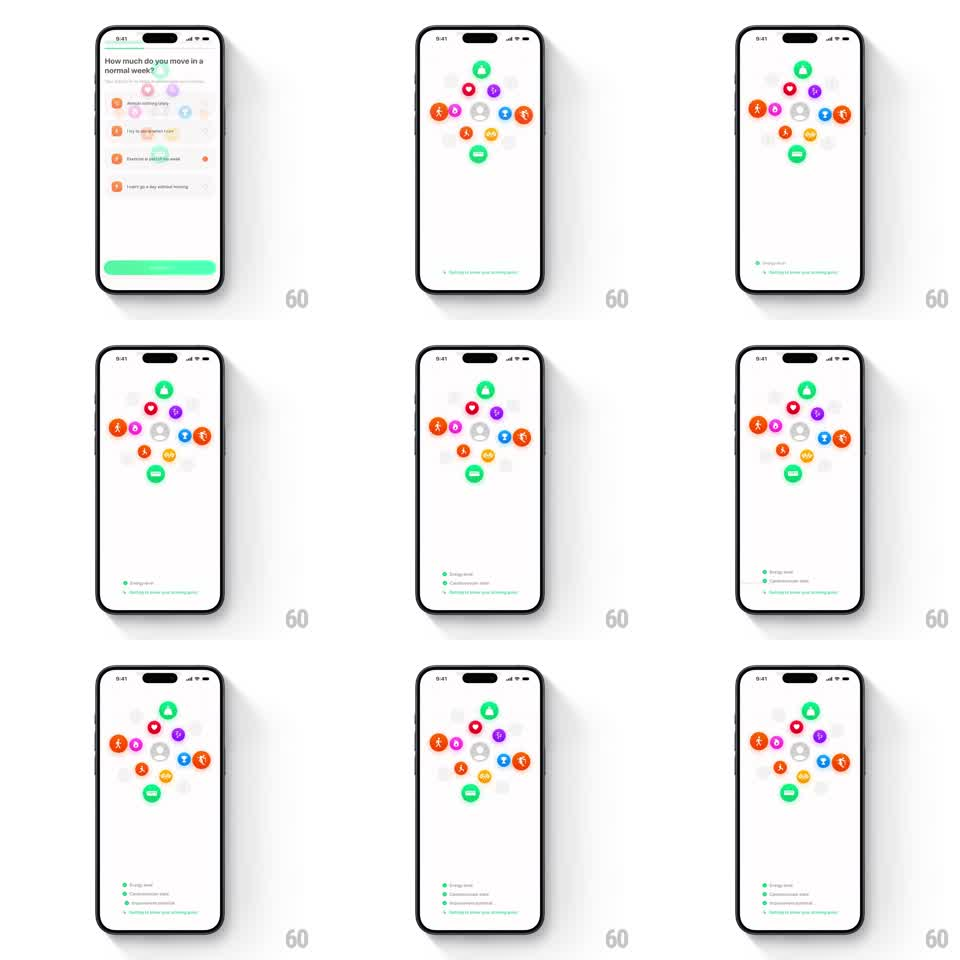

Media
Frame-by-frame

Rebuild this animation 1:1: FitWoody's onboarding loading screen - a ring of colorful health icons hovers center while checklist status lines slide and fade in from the bottom one at a time, each new line pushing the previous ones upward.

Rebuild this animation 1:1: FitWoody's onboarding loading screen - a ring of colorful health icons hovers center while checklist status lines slide and fade in from the bottom one at a time, each new line pushing the previous ones upward.
## Integration
Integration: stack-agnostic spec - springs given as stiffness/damping, timed motions as duration + curve; map every value to your framework and animation library of choice.
## Scene
Light screen after a quiz question ("How much do you move in a normal week?" with a selected answer): a loose ring of ~10 colorful health icons (runner, heart, bolt, drop, bike, flame...) around a muted center, then at the bottom a growing checklist of green-dot status lines ("Energy level", "Cardiovascular state", "Movement status", "Readiness to know your working grade" - each with a subline).
## Motion spec
Pattern: bottom-up checklist build, ~4s total.
- Setup: the question page slides away and the icon ring settles center (icons already placed, ring drifts slowly ~2px).
- First line: a status line slides up 20px and fades in at the bottom (300ms, ease-out), its green dot pulsing (scale 1 -> 1.3 -> 1, 300ms).
- Build: each next line appears below in the same slot animation (300ms, ~900ms apart), pushing previous lines up by one row height with a soft spring (~300/24).
- Completion: when the last line lands, all green dots do one synchronized micro-pulse (200ms).
## Calibration
- Lines enter at the bottom and migrate up - never insert above existing ones.
- The ring stays calm; the checklist owns the motion.
## Reduced motion
All status lines fade in at once (250ms) in final positions.
## Don't miss
- Each status line pairs a green dot with a two-line label (title + gray subline).
- The ring icons are small, colorful, and loosely scattered - not a rigid circle.